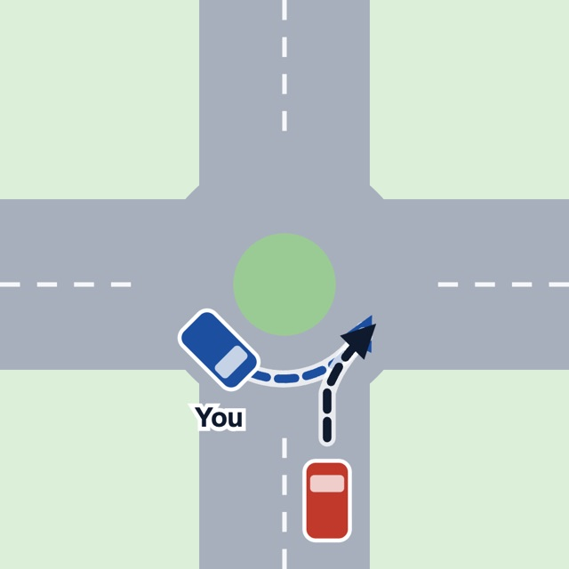
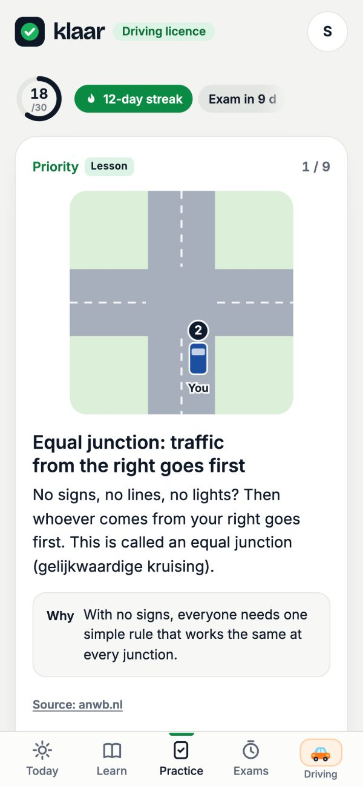
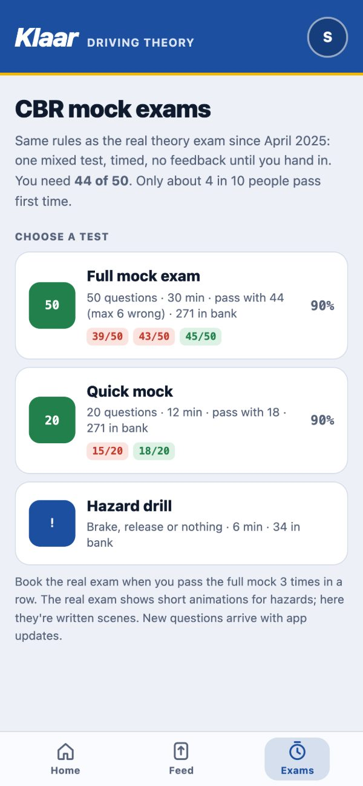
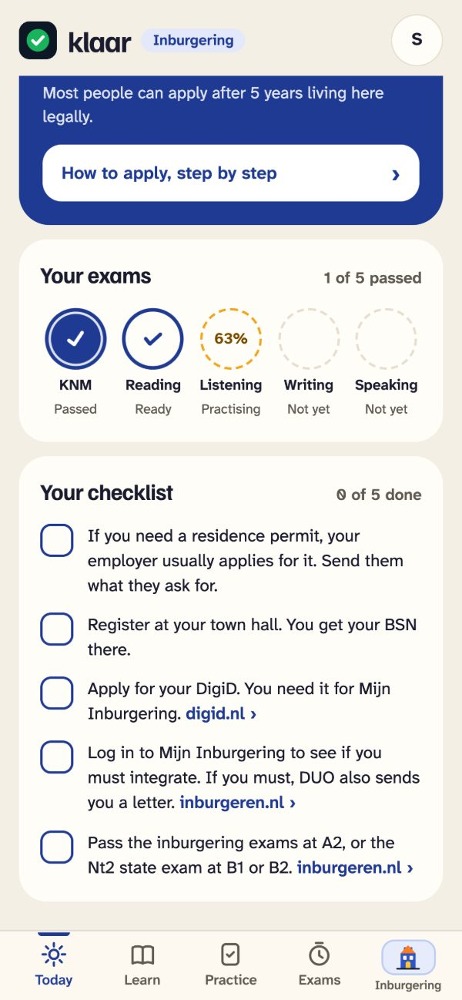
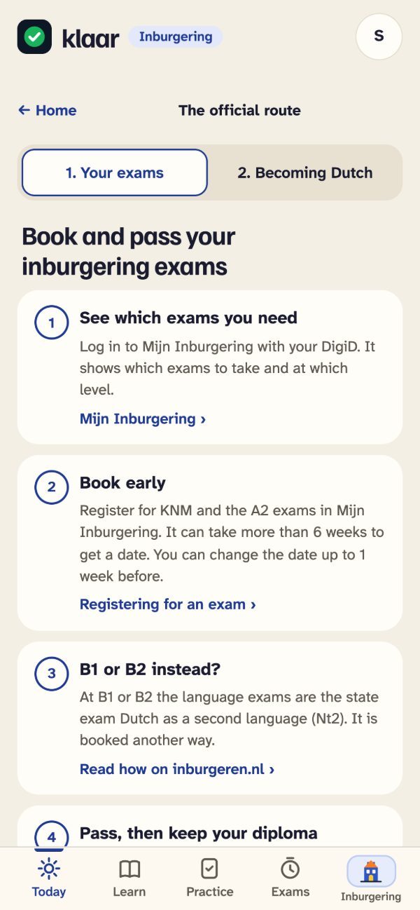

357 practice questions, 255 with a picture of the situation. 16 lessons that teach before they test. One light that tells you when you are ready.
Where expats get stuck
The study books are in Dutch, or the English reads like a bad translation.
Klaar is written in plain English. Dutch road words like haaientanden and ritsen are explained where they appear.
I do hundreds of questions and still don't know if I'm ready.
Your ring goes from red to amber to green, based on your answers. Green means book the exam.
I failed by two points and had to pay and wait again.
Mock exams use the real pass mark, and every question you got wrong comes back.
Try one
A real question from the app. Small roundabout, no signs, no shark teeth.
A car wants to enter the roundabout from the road on your right. Who goes first?
Right.
Without signs or markings the general rule applies: traffic from the right goes first, even on a roundabout. Many drivers think roundabout traffic always has priority. That only holds when the entry has shark teeth or a give-way sign.

Four tabs. One route to the exam.
Every topic starts with a short lesson, and practice only asks about what you have learned.
A plan that counts back from your exam date
Open the app and it tells you the one thing to do next.
- How ready you are, on a ring that goes red, amber, green
- Days left, today's goal and your streak
- Your weakest topic first, with how far you are from the pass mark


A short lesson before every topic
16 lessons in a sensible order, from priority and signs to the motorway and hazard perception.
- Each step is one rule you can use, with a moving scene that shows it
- Every step says why the rule exists, so it sticks
- Each lesson ends with questions on only what it taught


Questions that show the situation
Pick your mistakes, a mix of what you have learned, or one topic.
- Junctions drawn from above: your car, the others, and where each one goes
- Hazard questions from the driver's seat, with everything at its real distance
- Questions you get wrong come back until you get them right


Mock exams in the real format
A full mock, a quick one, and a hazard drill. Your scores stay on the card so you see the trend.
- No feedback until you hand in, like the real exam
- Every wrong answer shows the rule and its source
- Pass the full mock three times in a row and you are ready to book


Practise against the real pass mark
The mock exam uses the same numbers as the CBR theory exam. Pass it three times in a row, then book.
Check the current format and price on cbr.nl before you book.
From theory to licence, with dates
Pick when you want your licence. Klaar tells you honestly if that is realistic, and puts a date on every step.
- Theory examPractise here until your light is green, then book on cbr.nl.
- Driving lessonsAbout 40 hours for most people. Start while you study.
- Practical examYour driving school books it. Waiting times vary by region.
- LicenceApply at your town hall. It is usually ready within a week.
Already have a licence from another country? Klaar first checks if you can usually swap it instead. Klaar is independent: you book and apply on cbr.nl, mijn.cbr.nl and rdw.nl, and it links you there.
Inburgering, in the same app
Staying in the Netherlands? Get the exams done too.
One tap switches Klaar from driving to inburgering. Same app, a different plan.
- KNM practice: work, healthcare, housing, government and history
- Reading and listening practice at A2, with recorded Dutch audio
- Mock exams with DUO's time limits
- A countdown to when you can apply to stay or become Dutch
- A checklist for your situation, and the official route step by step, with links to DUO, inburgeren.nl and the IND
A stamp for each exam part as you pass it:


Questions people ask
Is Klaar made by the CBR or DUO?
No. Klaar is an independent practice app. The questions are original, written in the style of the exams and checked against official sources. You book the real exams yourself on cbr.nl and inburgeren.nl.
What does it cost?
Klaar is free during the beta.
Can I take the real theory exam in English?
Yes. The CBR offers the car theory exam in English. Check cbr.nl for the current price and how to book.
Is Klaar enough to pass?
Practise until you pass the full mock exam three times in a row. We also suggest the CBR's own practice material before the real exam. No app can promise you a pass.
How do I switch to inburgering?
Tap the last tab in the app. You get KNM, reading and listening practice, a stamp for each exam you pass, and the official route. You still book exams and apply on inburgeren.nl and ind.nl.
Where is my progress stored?
On your phone. Tap Save your progress in your profile to keep it in your account too, so it follows you to a new phone.
Does it work on iPhone and Android?
Yes, on both, in any modern browser. Add it to your home screen and it also works without internet.
When the light is green, you are klaar.
Klaar means ready. Start today and see your light turn green.
Start practising